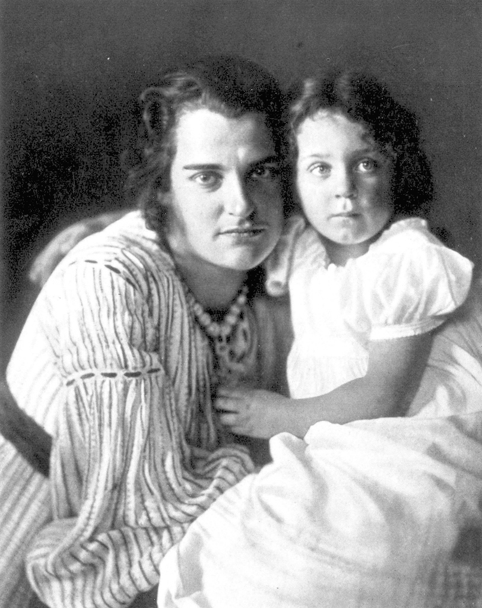

Clara i Ruth
12 grudnia roku 1901, kiedy wokół domu w Westerwede iskrzył się gęsty śnieg, przyszła na świat córka Rilkego i Clary Westhoff. „Niezwykle duże i silne dziecko” — pisał poeta do matki — „ma jędrne ciało, silną główkę, wysokie poważne czoło oraz ładnie uformowane dłonie”. Rodzice nadali jej piękne biblijne imię Ruth.
Wraz z narodzinami dziecka w domu zapanowało zrozumiałe poruszenie, mimo to Boże Narodzenie, które spędzili tylko we trójkę, było dla Rilkego niczym pierwsze w życiu Święta. „Naraz nastało całkiem nowe życie, bogatsze o nową przyszłość!” — napisał w liście do Franziski zu Reventlow. W dedykacji dla Clary, jaką umieścił w podarowanym jej egzemplarzu swej książki „Die Letzten”, przywoływał poczucie szczęśliwości, której źródłem stał się ich wspólny dom. Będzie ona ich prawem, nie zaś jałmużną otrzymaną od losu, a wśród nich nigdy nie zagości smutek.
Clara Rilke-Westhoff z córką Ruth, fotografia ze zbiorów Fondation Rilke